Modulation guidance stress test
Подозрение
Для \[\hat y(y,p^+,p^-,t)=y(p,t)+w\cdot\bigl(y(p^+,t)-y(p^-,t)\bigr)\]
При \(w=3\): \(\lVert\hat y\rVert\), вероятно, больше, чем \(\lVert y(p,t)\rVert\), и тогда, возможно, метрики у авторов статьи вырастают из-за изменения нормы вектора модуляции, а не большей информативности.
Эксперименты
Сделали 4 прогона на flux schnell с разной модуляцией для aesthetics p+, p-:
- \(y\rightarrow y\)
- \(y\rightarrow \hat y\)
- \(y\rightarrow \hat y\,\dfrac{\lVert y\rVert}{\lVert\hat y\rVert}\)
- \(y\rightarrow y\,\dfrac{\lVert\hat y\rVert}{\lVert y\rVert}\)
В скобках - прирост относительно нашего y.Всё-таки авторский метод - лучший среди рассмотренных. \(\hat y\) даёт лучший средний относительный прирост метрик. На втором месте за ним \(\hat y\,\dfrac{\lVert y\rVert}{\lVert\hat y\rVert}\) и тоже с приростом, то есть картинки становятся лучше и из-за большей информативности, и из-за изменения нормы. Но почему тогда \(y\,\dfrac{\lVert\hat y\rVert}{\lVert y\rVert}\) показал себя хуже, чем \(y\)? Посмотрим на векторы из guidance-уравнения поподробнее:
Это супернеожиданно: \(\lVert\hat y\rVert\approx0.93\,\lVert y\rVert\), и почему так получается, видно на графике - так устроены векторы \(y(p^+,t)\) и \(y(p^-,t)\): они друг друга практически компенсируют, и вектор разности противонаправлен \(y(p,t)\). То есть подозрение по поводу роста норм не оправдалось, и оказалось, что всё наоборот вообще - норма падает.
И вот что интересно: \(\hat y\) показал лучшие результаты, чем его немного увеличенная версия \(\hat y\,\dfrac{\lVert y\rVert}{\lVert\hat y\rVert}\) - наверное, для модели пошёл out of distribution или разность метрик обусловлена шумом измерений - не очень понятно и вообще неочевидно. Для пары \(y\) и \(y\,\dfrac{\lVert\hat y\rVert}{\lVert y\rVert}\) увеличение нормы метрики ухудшило, а для пары \(\hat y\) и \(\hat y\,\dfrac{\lVert y\rVert}{\lVert\hat y\rVert}\) - наоборот.
Таким образом, гипотеза о росте нормы не оправдалась, изменение нормы влияет на метрики нетривиально (больше \(\not\Rightarrow\) лучше) и метод авторов выдержал критику.
Ниже примеры генераций при разной модуляции:
\(y\)
\(\hat y\)
\(\hat y\,\dfrac{\lVert y\rVert}{\lVert\hat y\rVert}\)
\(y\,\dfrac{\lVert\hat y\rVert}{\lVert y\rVert}\)
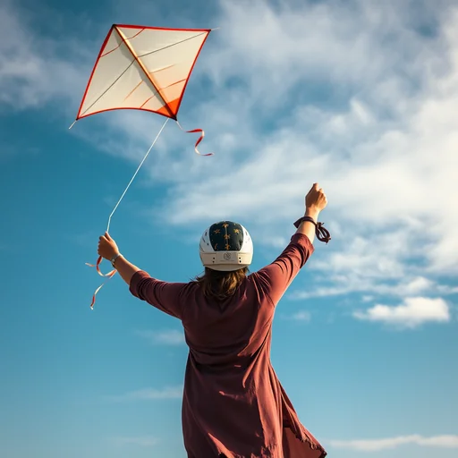
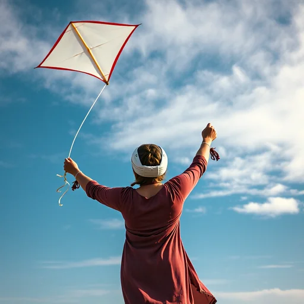
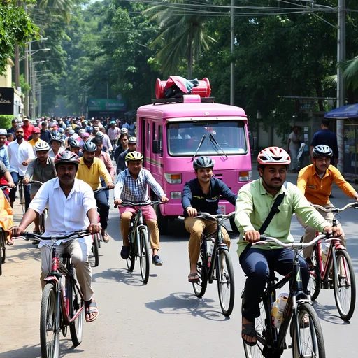
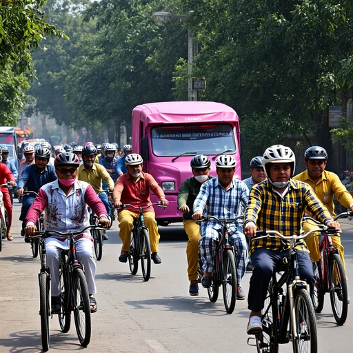
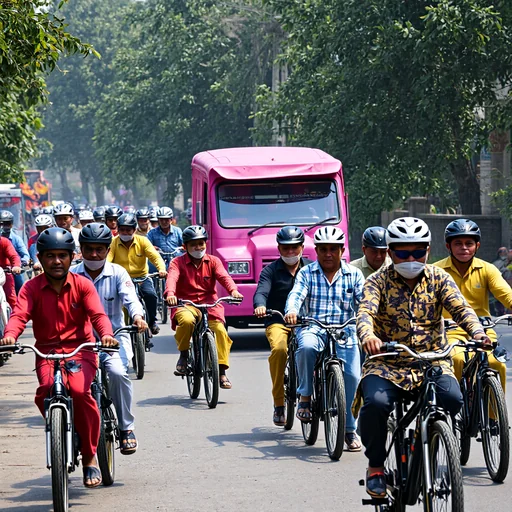
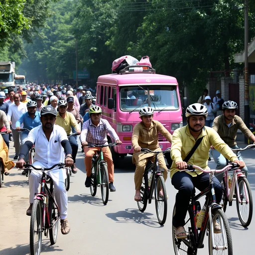
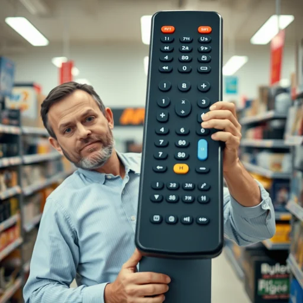
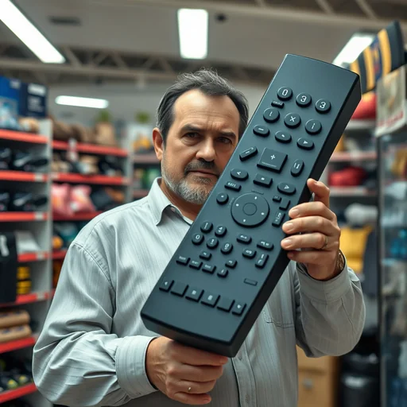
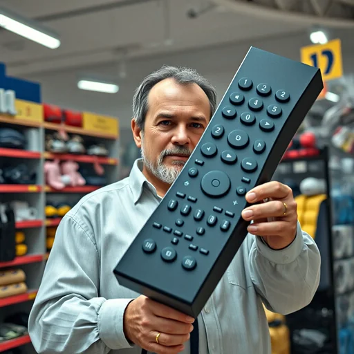
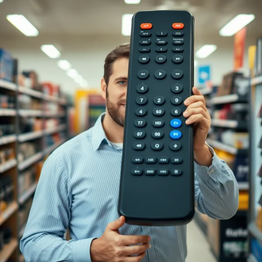
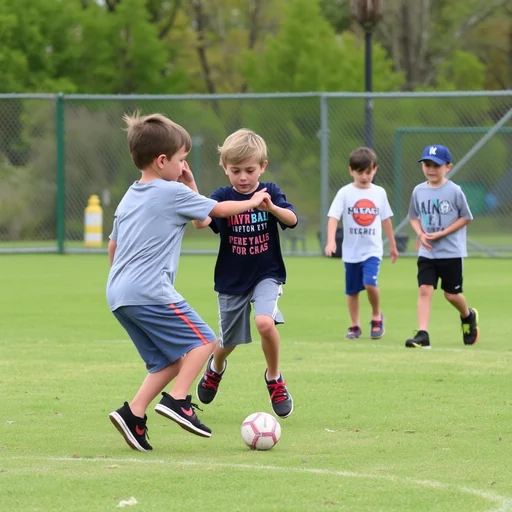
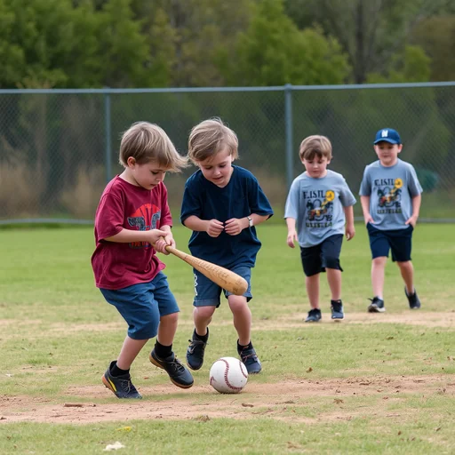
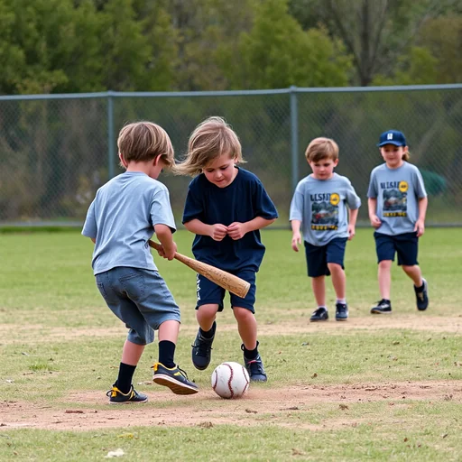
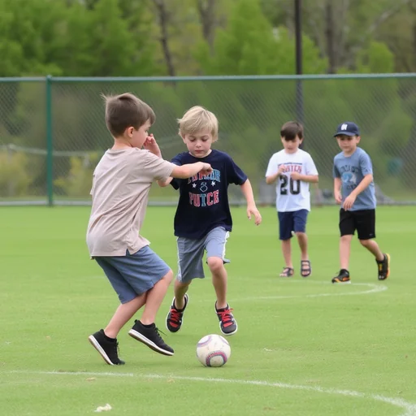
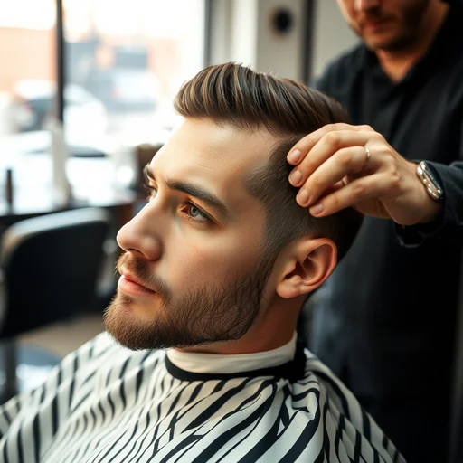
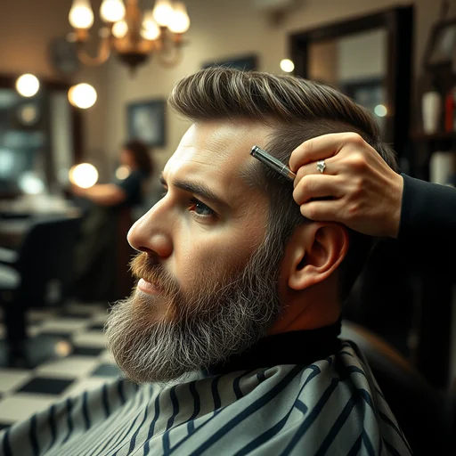
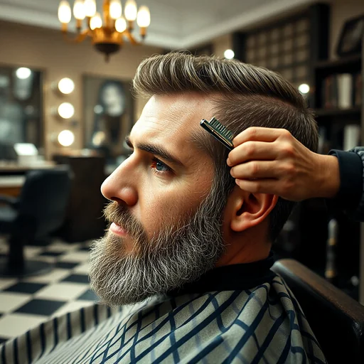
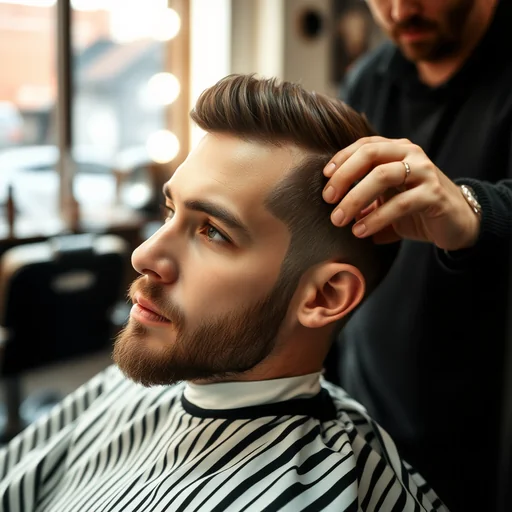
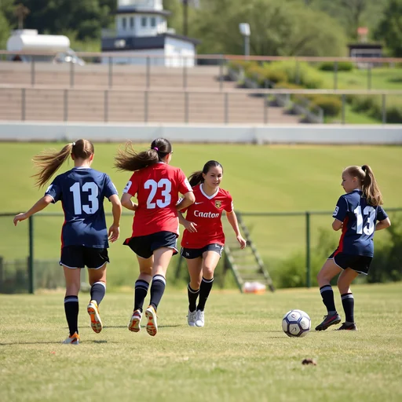
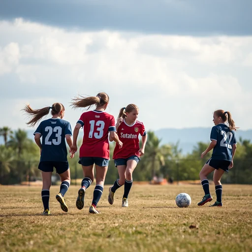
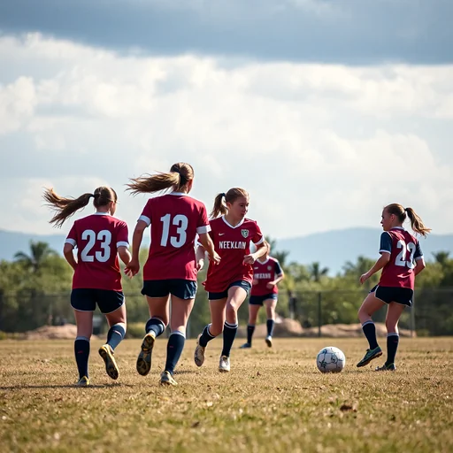
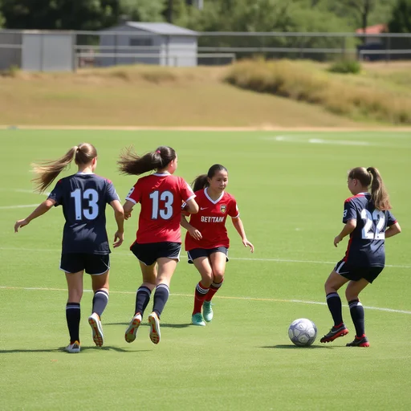
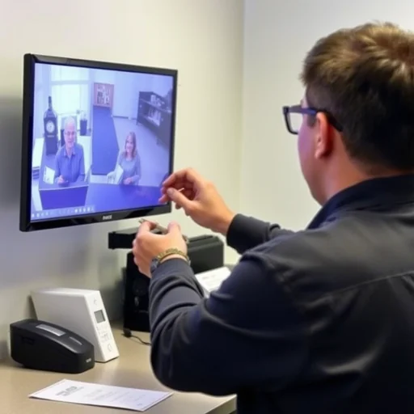
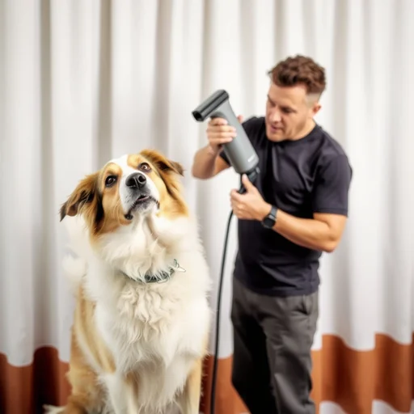
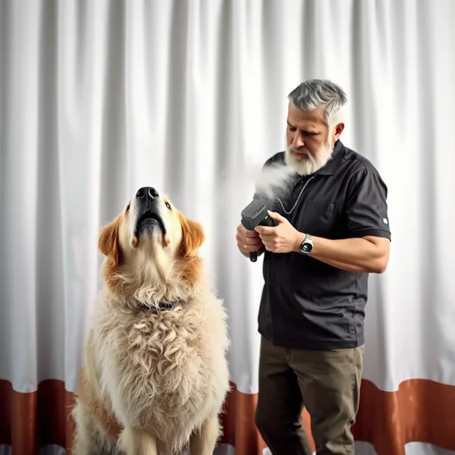
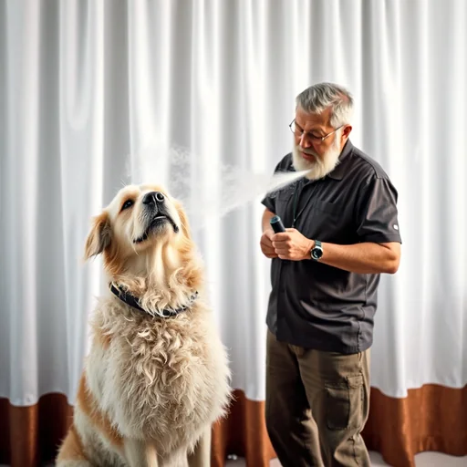
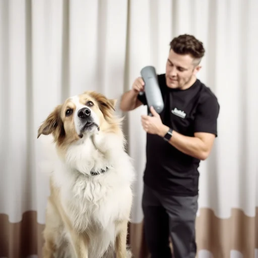
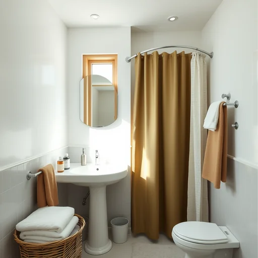
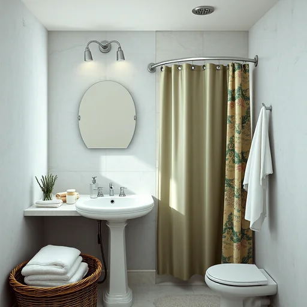
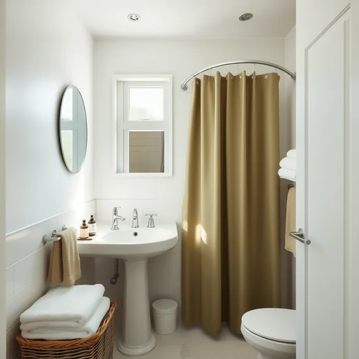